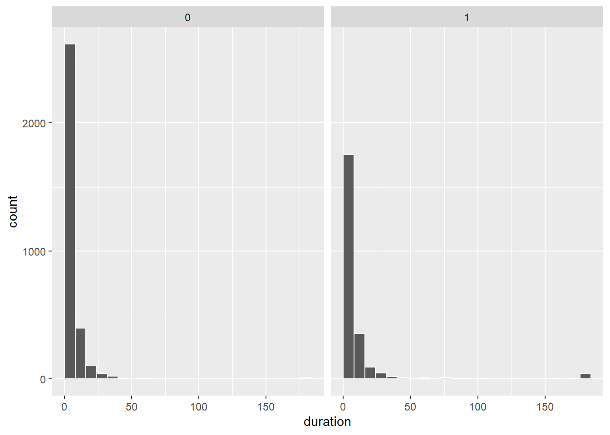
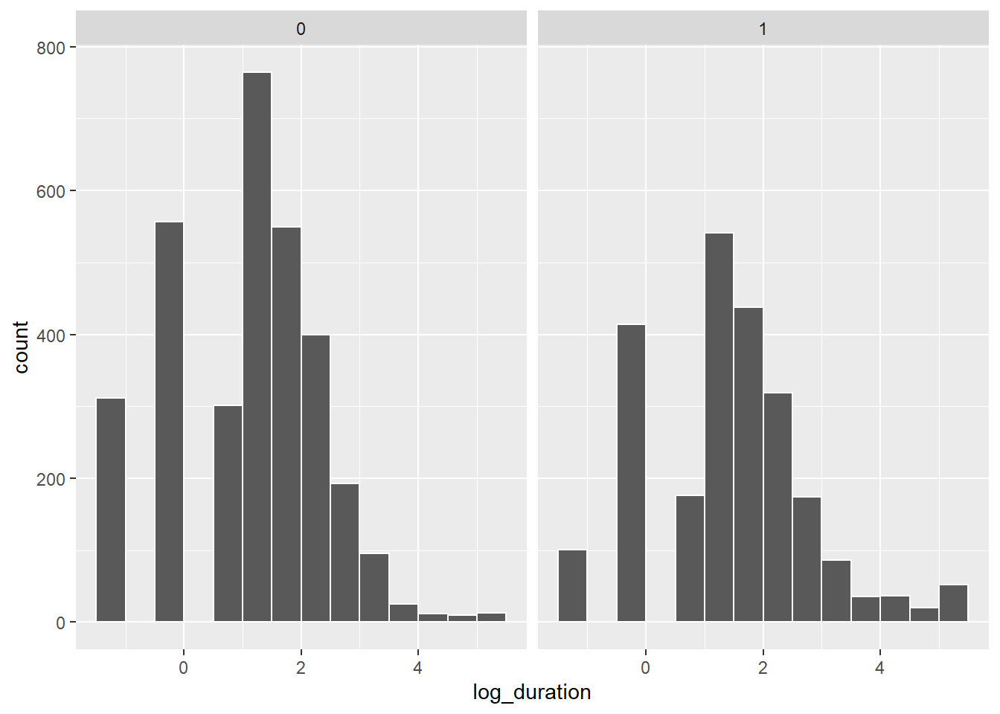
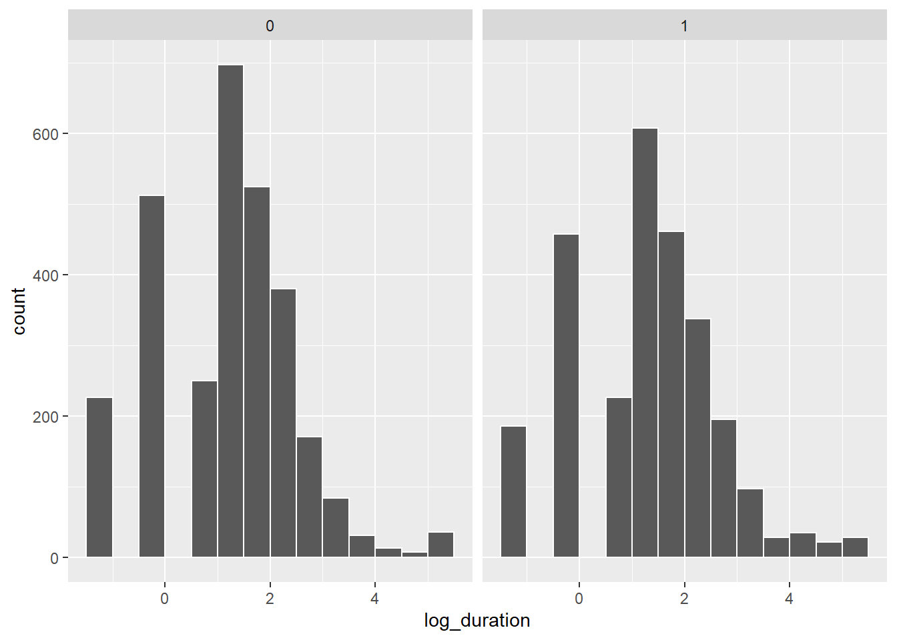
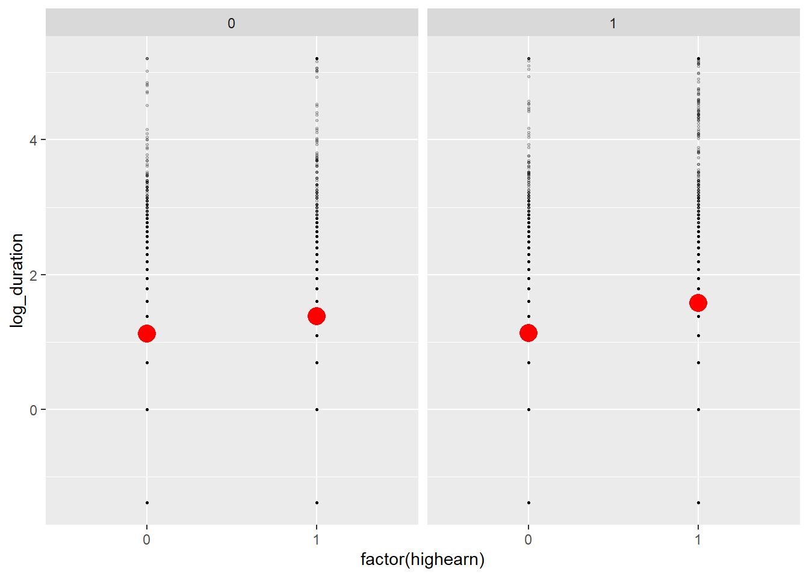
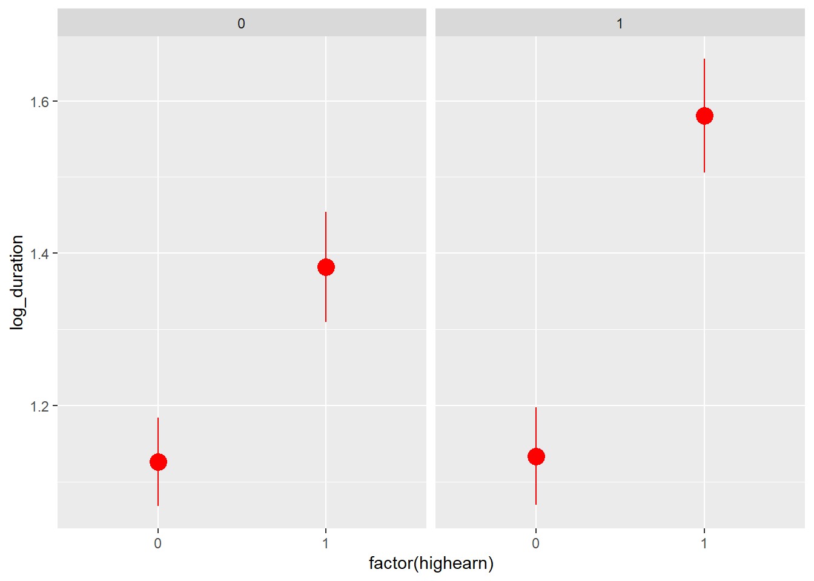
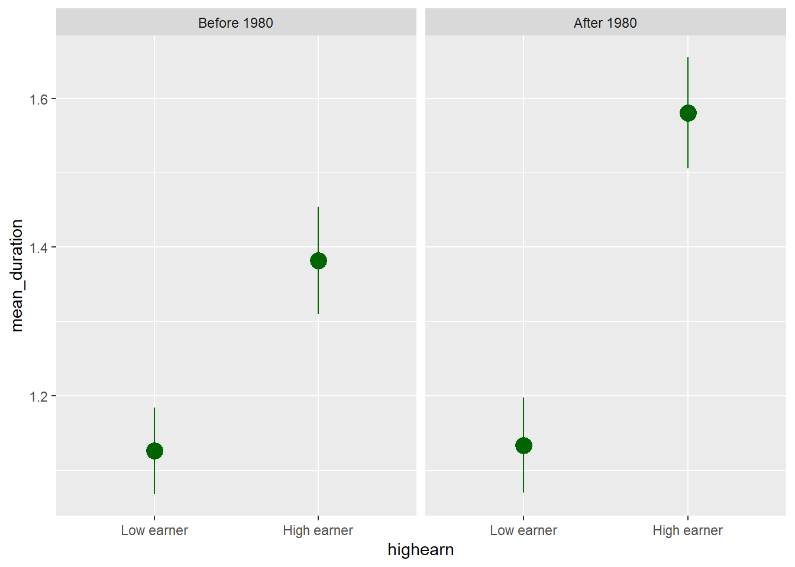
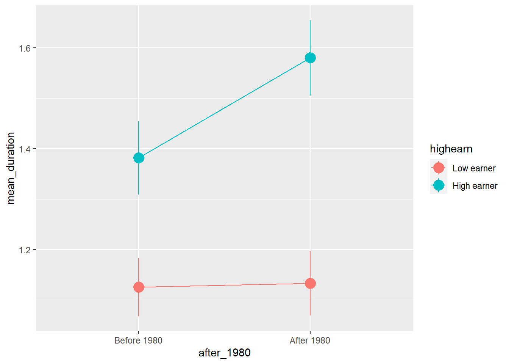
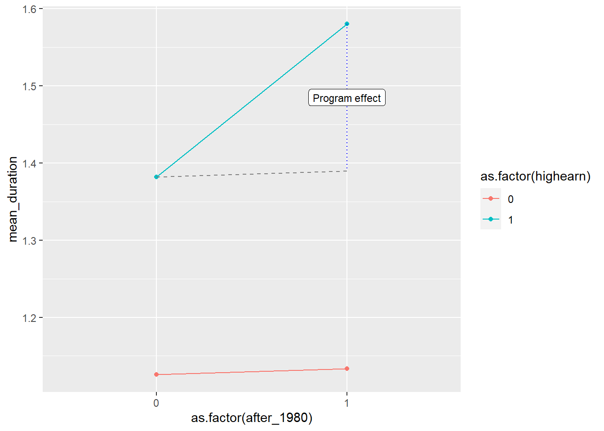

library(tidyverse) # ggplot(), %>%, mutate(), and friends
library(broom) # Convert models to data frames
library(scales) # Format numbers with functions like comma(), percent(), and dollar()
library(modelsummary) # Create side-by-side regression tablesDifference-in-differences
Zahid Asghar
Program background
In 1980, Kentucky raised its cap on weekly earnings that were covered by worker’s compensation. We want to know if this new policy caused workers to spend more time unemployed. If benefits are not generous enough, then workers could sue companies for on-the-job injuries, while overly generous benefits could cause moral hazard issues and induce workers to be more reckless on the job, or to claim that off-the-job injuries were incurred while at work.
The main outcome variable we care about is log_duration (in the original data as ldurat, but we rename it to be more human readable), or the logged duration (in weeks) of worker’s compensation benefits. We log it because the variable is fairly skewed—most people are unemployed for a few weeks, with some unemployed for a long time. The policy was designed so that the cap increase did not affect low-earnings workers, but did affect high-earnings workers, so we use low-earnings workers as our control group and high-earnings workers as our treatment group.
The data is included in the wooldridge R package as the injury dataset, and if you install the package, load it with library(wooldridge), and run ?injury in the console, you can see complete details about what’s in it. To give you more practice with loading data from external files, I exported the injury data as a CSV file (using write_csv(injury, "injury.csv")) and included it here.
These are the main columns we’ll worry about for now:
durat(which we’ll rename toduration): Duration of unemployment benefits, measured in weeksldurat(which we’ll rename tolog_duration): Logged version ofdurat(log(durat))after_1980(which we’ll rename toafter_1980): Indicator variable marking if the observation happened before (0) or after (1) the policy change in 1980. This is our time (or before/after variable)highearn: Indicator variable marking if the observation is a low (0) or high (1) earner. This is our group (or treatment/control) variable
Load and clean data
First, let’s download the dataset (if you haven’t already), put in a folder named data, and load it:
# Load the data.
# It'd be a good idea to click on the "injury_raw" object in the Environment
# panel in RStudio to see what the data looks like after you load it
injury_raw <- read_csv("data/injury.csv")Next we’ll clean up the injury_raw data a little to limit the data to just observations from Kentucky. we’ll also rename some awkwardly-named columns:
injury <- injury_raw %>%
filter(ky == 1) %>%
# The syntax for rename is `new_name = original_name`
rename(duration = durat, log_duration = ldurat,
after_1980 = afchnge)Exploratory data analysis
First we can look at the distribution of unemployment benefits across high and low earners (our control and treatment groups):
ggplot(data = injury, aes(x = duration)) +
# binwidth = 8 makes each column represent 2 months (8 weeks)
# boundary = 0 make it so the 0-8 bar starts at 0 and isn't -4 to 4
geom_histogram(binwidth = 8, color = "white", boundary = 0) +
facet_wrap(vars(highearn))
The distribution is really skewed, with most people in both groups getting between 0-8 weeks of benefits (and a handful with more than 180 weeks! that’s 3.5 years!)
If we use the log of duration, we can get a less skewed distribution that works better with regression models:
ggplot(data = injury, mapping = aes(x = log_duration)) +
geom_histogram(binwidth = 0.5, color = "white", boundary = 0) +
# Uncomment this line if you want to exponentiate the logged values on the
# x-axis. Instead of showing 1, 2, 3, etc., it'll show e^1, e^2, e^3, etc. and
# make the labels more human readable
# scale_x_continuous(labels = trans_format("exp", format = round)) +
facet_wrap(vars(highearn))
We should also check the distribution of unemployment before and after the policy change. Copy/paste one of the histogram chunks and change the faceting:
ggplot(data = injury, mapping = aes(x = log_duration)) +
geom_histogram(binwidth = 0.5, color = "white", boundary = 0) +
facet_wrap(vars(after_1980))
The distributions look normal-ish, but we can’t really easily see anything different between the before/after and treatment/control groups. We can plot the averages, though. There are a few different ways we can do this.
You can use a stat_summary() layer to have ggplot calculate summary statistics like averages. Here we just calculate the mean:
ggplot(injury, aes(x = factor(highearn), y = log_duration)) +
geom_point(size = 0.5, alpha = 0.2) +
stat_summary(geom = "point", fun = "mean", size = 5, color = "red") +
facet_wrap(vars(after_1980))
But we can also calculate the mean and 95% confidence interval:
ggplot(injury, aes(x = factor(highearn), y = log_duration)) +
stat_summary(geom = "pointrange", size = 1, color = "red",
fun.data = "mean_se", fun.args = list(mult = 1.96)) +
facet_wrap(vars(after_1980))
We can already start to see the classical diff-in-diff plot! It looks like high earners after 1980 had longer unemployment on average.
We can also use group_by() and summarize() to figure out group means before sending the data to ggplot. I prefer doing this because it gives me more control over the data that I’m plotting:
plot_data <- injury %>%
# Make these categories instead of 0/1 numbers so they look nicer in the plot
mutate(highearn = factor(highearn, labels = c("Low earner", "High earner")),
after_1980 = factor(after_1980, labels = c("Before 1980", "After 1980"))) %>%
group_by(highearn, after_1980) %>%
summarize(mean_duration = mean(log_duration),
se_duration = sd(log_duration) / sqrt(n()),
upper = mean_duration + (1.96 * se_duration),
lower = mean_duration + (-1.96 * se_duration))
ggplot(plot_data, aes(x = highearn, y = mean_duration)) +
geom_pointrange(aes(ymin = lower, ymax = upper),
color = "darkgreen", size = 1) +
facet_wrap(vars(after_1980))
Or, plotted in the more standard diff-in-diff format:
ggplot(plot_data, aes(x = after_1980, y = mean_duration, color = highearn)) +
geom_pointrange(aes(ymin = lower, ymax = upper), size = 1) +
# The group = highearn here makes it so the lines go across categories
geom_line(aes(group = highearn))
Diff-in-diff by hand
We can find that exact difference by filling out the 2x2 before/after treatment/control table:
| Before 1980 | After 1980 | ∆ | |
|---|---|---|---|
| Low earners | A | B | B − A |
| High earners | C | D | D − C |
| ∆ | C − A | D − B | (D − C) − (B − A) |
A combination of group_by() and summarize() makes this really easy:
diffs <- injury %>%
group_by(after_1980, highearn) %>%
summarize(mean_duration = mean(log_duration),
# Calculate average with regular duration too, just for fun
mean_duration_for_humans = mean(duration))
diffs# A tibble: 4 × 4
# Groups: after_1980 [2]
after_1980 highearn mean_duration mean_duration_for_humans
<dbl> <dbl> <dbl> <dbl>
1 0 0 1.13 6.27
2 0 1 1.38 11.2
3 1 0 1.13 7.04
4 1 1 1.58 12.9 We can pull each of these numbers out of the table with some filter()s and pull():
before_treatment <- diffs %>%
filter(after_1980 == 0, highearn == 1) %>%
pull(mean_duration)
before_control <- diffs %>%
filter(after_1980 == 0, highearn == 0) %>%
pull(mean_duration)
after_treatment <- diffs %>%
filter(after_1980 == 1, highearn == 1) %>%
pull(mean_duration)
after_control <- diffs %>%
filter(after_1980 == 1, highearn == 0) %>%
pull(mean_duration)
diff_treatment_before_after <- after_treatment - before_treatment
diff_treatment_before_after[1] 0.1982585diff_control_before_after <- after_control - before_control
diff_control_before_after[1] 0.007657313diff_diff <- diff_treatment_before_after - diff_control_before_after
diff_diff[1] 0.1906012The diff-in-diff estimate is 0.191, which means that the program causes an increase in unemployment duration of 0.19 logged weeks. Logged weeks is nonsensical, though, so we have to interpret it with percentages (here’s a handy guide!; this is Example B, where the dependent/outcome variable is logged). Receiving the treatment (i.e. being a high earner after the change in policy) causes a 19% increase in the length of unemployment.
ggplot(diffs, aes(x = as.factor(after_1980),
y = mean_duration,
color = as.factor(highearn))) +
geom_point() +
geom_line(aes(group = as.factor(highearn))) +
# If you use these lines you'll get some extra annotation lines and
# labels. The annotate() function lets you put stuff on a ggplot that's not
# part of a dataset. Normally with geom_line, geom_point, etc., you have to
# plot data that is in columns. With annotate() you can specify your own x and
# y values.
annotate(geom = "segment", x = "0", xend = "1",
y = before_treatment, yend = after_treatment - diff_diff,
linetype = "dashed", color = "grey50") +
annotate(geom = "segment", x = "1", xend = "1",
y = after_treatment, yend = after_treatment - diff_diff,
linetype = "dotted", color = "blue") +
annotate(geom = "label", x = "1", y = after_treatment - (diff_diff / 2),
label = "Program effect", size = 3)
# Here, all the as.factor changes are directly in the ggplot code. I generally
# don't like doing this and prefer to do that separately so there's less typing
# in the ggplot code, like this:
#
# diffs <- diffs %>%
# mutate(after_1980 = as.factor(after_1980), highearn = as.factor(highearn))
#
# ggplot(diffs, aes(x = after_1980, y = avg_durat, color = highearn)) +
# geom_line(aes(group = highearn))Diff-in-diff with regression
Calculating all the pieces by hand like that is tedious, so we can use regression to do it instead! Remember that we need to include indicator variables for treatment/control and for before/after, as well as the interaction of the two. Here’s what the math equation looks like:
\[ \begin{aligned} \log(\text{duration}) = &\alpha + \beta \ \text{highearn} + \gamma \ \text{after\_1980} + \\ & \delta \ (\text{highearn} \times \text{after\_1980}) + \epsilon \end{aligned} \]
The \(\delta\) coefficient is the effect we care about in the end—that’s the diff-in-diff estimator.
model_small <- lm(log_duration ~ highearn + after_1980 + highearn * after_1980,
data = injury)
tidy(model_small)# A tibble: 4 × 5
term estimate std.error statistic p.value
<chr> <dbl> <dbl> <dbl> <dbl>
1 (Intercept) 1.13 0.0307 36.6 1.62e-263
2 highearn 0.256 0.0474 5.41 6.72e- 8
3 after_1980 0.00766 0.0447 0.171 8.64e- 1
4 highearn:after_1980 0.191 0.0685 2.78 5.42e- 3The coefficient for highearn:after_1980 is the same as what we found by hand, as it should be! It is statistically significant, so we can be fairly confident that it is not 0.
Diff-in-diff with regression + controls
One advantage to using regression for diff-in-diff is that we can include control variables to help isolate the effect. For example, perhaps claims made by construction or manufacturing workers tend to have longer duration than claims made workers in other industries. Or maybe those claiming back injuries tend to have longer claims than those claiming head injuries. We might also want to control for worker demographics such as gender, marital status, and age.
Let’s estimate an expanded version of the basic regression model with the following additional variables:
malemarriedagehosp(1 = hospitalized)indust(1 = manuf, 2 = construc, 3 = other)injtype(1-8; categories for different types of injury)lprewage(log of wage prior to filing a claim)
Important: indust and injtype are in the dataset as numbers (1-3 and 1-8), but they’re actually categories. We have to tell R to treat them as categories (or factors), otherwise it’ll assume that you can have an injury type of 3.46 or something impossible.
# Convert industry and injury type to categories/factors
injury_fixed <- injury %>%
mutate(indust = as.factor(indust),
injtype = as.factor(injtype))model_big <- lm(log_duration ~ highearn + after_1980 + highearn * after_1980 +
male + married + age + hosp + indust + injtype + lprewage,
data = injury_fixed)
tidy(model_big)# A tibble: 18 × 5
term estimate std.error statistic p.value
<chr> <dbl> <dbl> <dbl> <dbl>
1 (Intercept) -1.53 0.422 -3.62 2.98e- 4
2 highearn -0.152 0.0891 -1.70 8.86e- 2
3 after_1980 0.0495 0.0413 1.20 2.31e- 1
4 male -0.0843 0.0423 -1.99 4.64e- 2
5 married 0.0567 0.0373 1.52 1.29e- 1
6 age 0.00651 0.00134 4.86 1.19e- 6
7 hosp 1.13 0.0370 30.5 5.20e-189
8 indust2 0.184 0.0541 3.40 6.87e- 4
9 indust3 0.163 0.0379 4.32 1.60e- 5
10 injtype2 0.935 0.144 6.51 8.29e- 11
11 injtype3 0.635 0.0854 7.44 1.19e- 13
12 injtype4 0.555 0.0928 5.97 2.49e- 9
13 injtype5 0.641 0.0854 7.51 7.15e- 14
14 injtype6 0.615 0.0863 7.13 1.17e- 12
15 injtype7 0.991 0.191 5.20 2.03e- 7
16 injtype8 0.434 0.119 3.65 2.64e- 4
17 lprewage 0.284 0.0801 3.55 3.83e- 4
18 highearn:after_1980 0.169 0.0640 2.64 8.38e- 3# Extract just the diff-in-diff estimate
diff_diff_controls <- tidy(model_big) %>%
filter(term == "highearn:after_1980") %>%
pull(estimate)After controlling for a host of demographic controls, the diff-in-diff estimate is smaller (0.169), indicating that the policy caused a 17% increase in the duration of weeks unemployed following a workplace injury. It is smaller because the other independent variables now explain some of the variation in log_duration.
Comparison of results
We can put the model coefficients side-by-side to compare the value for highearn:after_1980 as we change the model.
modelsummary(list("Simple" = model_small, "Full" = model_big))| Simple | Full | |
|---|---|---|
| (Intercept) | 1.126*** | −1.528*** |
| (0.031) | (0.422) | |
| highearn | 0.256*** | −0.152+ |
| (0.047) | (0.089) | |
| after_1980 | 0.008 | 0.050 |
| (0.045) | (0.041) | |
| highearn × after_1980 | 0.191** | 0.169** |
| (0.069) | (0.064) | |
| male | −0.084* | |
| (0.042) | ||
| married | 0.057 | |
| (0.037) | ||
| age | 0.007*** | |
| (0.001) | ||
| hosp | 1.130*** | |
| (0.037) | ||
| indust2 | 0.184*** | |
| (0.054) | ||
| indust3 | 0.163*** | |
| (0.038) | ||
| injtype2 | 0.935*** | |
| (0.144) | ||
| injtype3 | 0.635*** | |
| (0.085) | ||
| injtype4 | 0.555*** | |
| (0.093) | ||
| injtype5 | 0.641*** | |
| (0.085) | ||
| injtype6 | 0.615*** | |
| (0.086) | ||
| injtype7 | 0.991*** | |
| (0.191) | ||
| injtype8 | 0.434*** | |
| (0.119) | ||
| lprewage | 0.284*** | |
| (0.080) | ||
| Num.Obs. | 5626 | 5347 |
| R2 | 0.021 | 0.190 |
| R2 Adj. | 0.020 | 0.187 |
| + p < 0.1, * p < 0.05, ** p < 0.01, *** p < 0.001 |